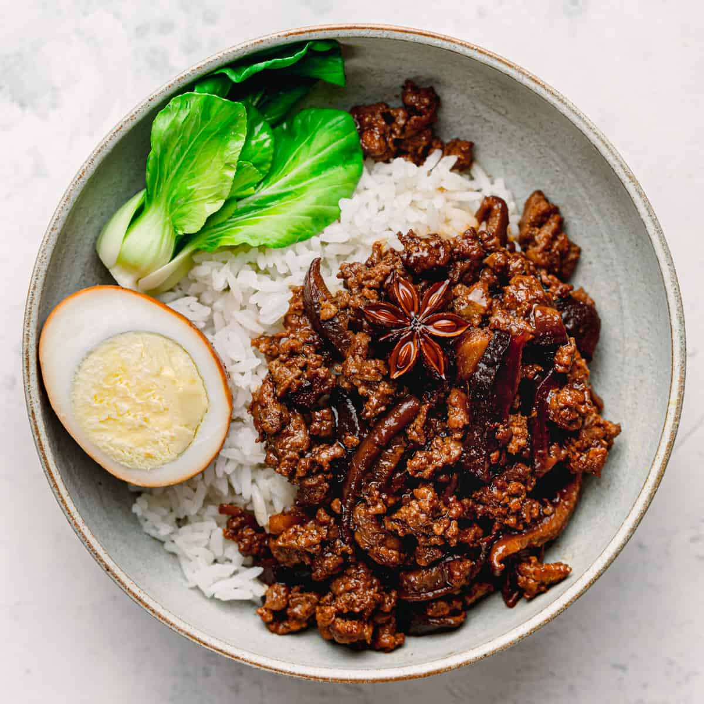
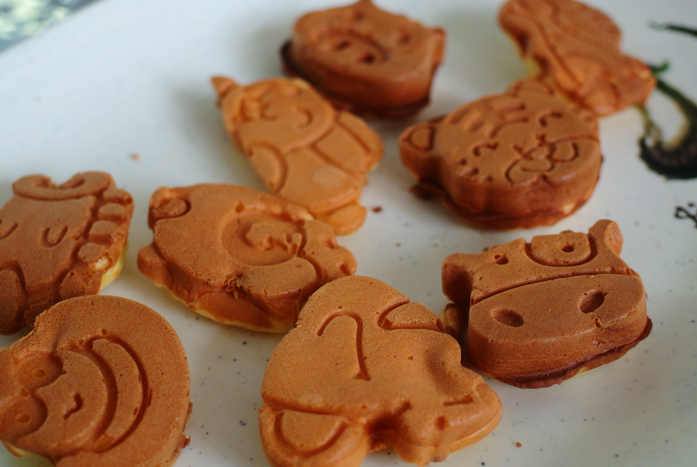
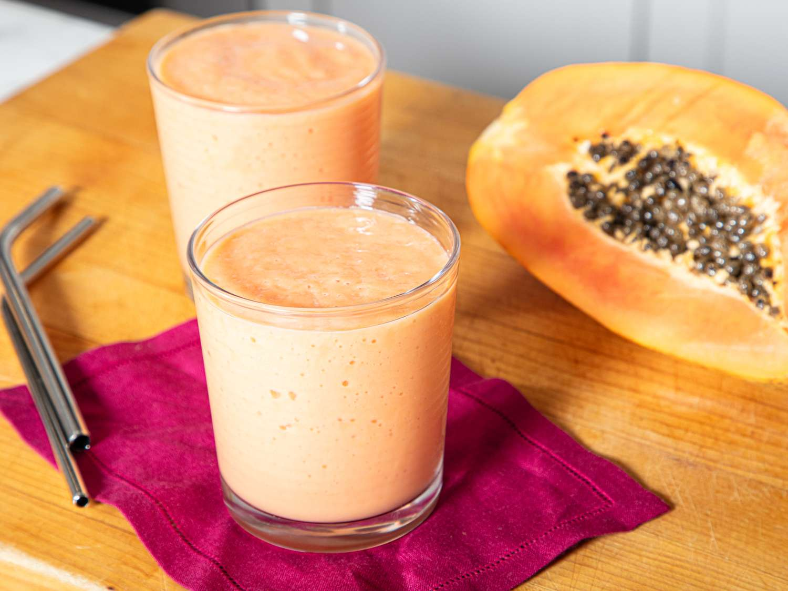

Braised Pork over Rice

A flavorful dish of tender pork slow-cooked in a savory sauce, served over steamed rice.
- Pork Belly
- Soy Sauce
- Garlic
- Ginger
Chicken Egg Cake

A delicate cake made with chicken, eggs, flour, and sugar. Almost like a waffle!
- Chicken
- Eggs
- Sugar
- Flour
Cold Papaya Milk

A refreshing drink made from ripe papaya and milk, perfect for hot weather.
- Papaya
- Milk
- Sugar
- Water